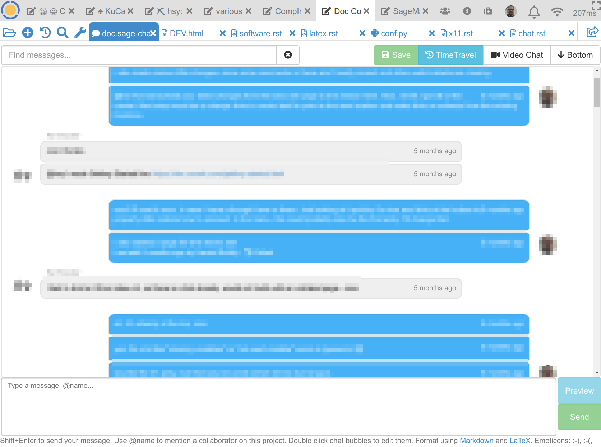

Chatrooms
CoCalc supports chatrooms for direct communication between collaborators to enhance real-time collaboration on files.
Features
Editing: you can edit any message by double-clicking on it; a message specific “history” appears.
Emoticons: a small set of characters are translated to unicode emoticons. E.g. type in
:-)to express that you’re happy!Formulas: You can write LaTeX formulas between $ signs, e.g.
$\frac{1}{x + \sin{x}^2}$renders as .
.Insert images: you can either upload and reference any files to be shown in a chat message, or drag’n’drop onto the input box to upload a picture. The file will be uploaded into a hidden directory with the name
.chat-imagesand some appropriate HTML code will be inserted into the chat box.Markdown: Use Markdown Syntax to highlight
**certain words**, insert URL links, etc. See CoCalc notes on markdown for implementation notes.Notifications: if there is any chat activity, the bell-icon at the top right will light up red and wiggle. Click on that bell to see where the activity is. You can click on the specific entry to open the file or chat, or click on the “Mark all read” button to clear the alert.
Search: use the search box at the top left to filter messages. You can search for regular expressions by enclosing them in slashes, for example
/^# /.Video chat: the button named “Video Chat” opens up a 3rd party service, which establishes an audio and video connection for more in-depth discussions.
Creating a Chatroom
To start a new chat:
Open up the “Files” tab in a project;
(Maybe) switch to a specific directory, but any directory works;
Click the
+ Addbutton and select the “Chatroom” filetype.
@-mentions
Start a new word with the @ symbol to create an @-mention in a chat message. A list of names appears and you can select one or more recipients of an email notification. Additional mentions of the same user will not trigger notifications for the next few hours, since we don’t want to spam people. In order to send an email, CoCalc must have a working email address for the recipient.
@-mention of names in course shared project chat
You can see a list of all @-mentions sent to you by visiting the link https://cocalc.com/notifications
Side Chat
At the top right in the Files toolbar for any open file, there is a chat icon:  .
This opens up a chatroom which is specific to that file.
This is commonly used to discuss the content of the given worksheet or notebook,
e.g. students asking teachers/TAs.
.
This opens up a chatroom which is specific to that file.
This is commonly used to discuss the content of the given worksheet or notebook,
e.g. students asking teachers/TAs.


{kind=link}
{kind=link}